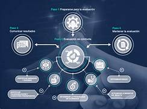
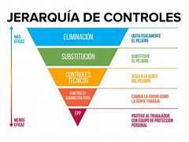
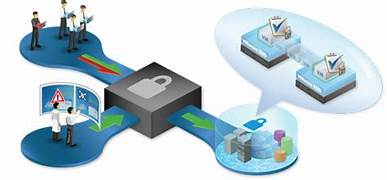

Acerca de Jaime Lorenzo Sanchez
Ingeniero informatico especializado en computacion.
En un mundo digital en constante evolución, la ciberseguridad es más crucial que nunca.
Mi pasión por la ciberseguridad me impulsa a ofrecer soluciones integrales y personalizadas que se adaptan a las necesidades únicas de cada empresa. Me dedico a comprender los desafíos específicos de mis clientes y a desarrollar estrategias efectivas para mitigar riesgos, prevenir ataques y garantizar la continuidad operativa.
Con un enfoque proactivo y una comprensión profunda de las últimas tendencias y amenazas, ayudo a las empresas a navegar el panorama cibernético actual con confianza y tranquilidad.
Servicios de ciberseguridad incomparables para su negocio
-
En un mundo digital en constante evolución, la ciberseguridad se ha convertido en una necesidad imperiosa para las empresas de todos los tamaños. En Tutor Tech, ofrecemos una gama completa de servicios de seguridad de la información diseñados para proteger su negocio de las amenazas cibernéticas más sofisticadas y garantizar la continuidad operativa.
-
Evaluación exhaustiva de riesgos de ciberseguridad
Identifique, analice y priorice las amenazas potenciales para su organización con nuestra evaluación exhaustiva de riesgos de ciberseguridad. Obtenga una comprensión clara de su postura de seguridad y tome decisiones informadas para proteger su negocio.
-
Implementación robusta de controles de seguridad
Implemente medidas de seguridad personalizadas y efectivas para proteger sus datos confidenciales, sistemas críticos y reputación frente a ataques cibernéticos. Nuestros expertos en seguridad le ayudarán a diseñar e implementar una estrategia de seguridad integral que se adapte a las necesidades únicas de su negocio.
-
Pruebas de penetración y análisis de vulnerabilidades exhaustivos
Simule ataques reales para identificar y remediar vulnerabilidades en sus sistemas y redes antes de que los ciberdelincuentes puedan explotarlas. Nuestras pruebas de penetración exhaustivas le brindan la tranquilidad de saber que su negocio está protegido contra las últimas amenazas.
-
Monitoreo y respuesta proactivos a incidentes

Disfrute de un monitoreo continuo de su entorno de TI para detectar y responder rápidamente a incidentes de seguridad. Minimizamos el impacto en su negocio y le ayudamos a restaurar la normalidad rápidamente.
-
Capacitación y sensibilización integral en ciberseguridad
Capacite a sus empleados sobre las mejores prácticas de seguridad cibernética para reducir el riesgo de errores humanos y ataques de ingeniería social. Nuestra capacitación integral les brinda las herramientas y el conocimiento que necesitan para proteger su negocio desde adentro.
Beneficios incomparables para su negocio
-
Protección integral contra ciberataques
Salvaguarde sus datos confidenciales, sistemas críticos y reputación frente a las crecientes amenazas cibernéticas con nuestras soluciones de seguridad de última generación.
-
Confianza y lealtad fortalecidas de los clientes
Demuestre su compromiso con la seguridad de la información y gane la confianza de sus clientes, mejorando su lealtad y reputación.
-
Eficiencia operativa optimizada
Reduzca el tiempo de inactividad y los costos asociados a incidentes de seguridad, mejorando la eficiencia y productividad de su negocio.
-
Cumplimiento normativo simplificado
Cumpla sin problemas con las regulaciones y estándares de seguridad de datos, como GDPR, PCI DSS y ISO 27001, evitando sanciones y riesgos legales.
-
Tranquilidad y paz mental
Disfrute de la tranquilidad de saber que su negocio está protegido por expertos en ciberseguridad confiables, permitiéndole enfocarse en lo que realmente importa: el crecimiento y el éxito de su empresa.